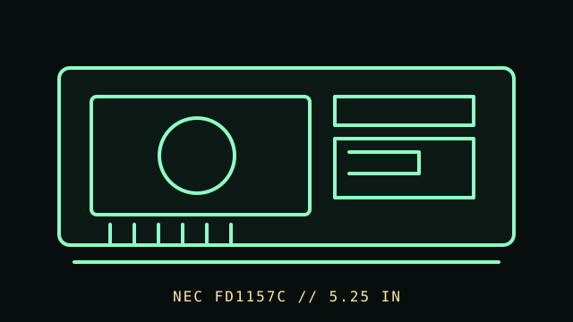

[ FLOPPY DRIVES // IDENTIFIED MODEL ]
NEC FD1157C 5.25-inch Drive
NEC FD1157C is a specific 5.25-inch floppy-drive model documented in NEC’s drive brochure. The exact suffix and interface manual determine its configuration; this record does not infer an unrelated FD115x variant’s ratings.

MODEL IDENTIFICATION: NEC FD1157C; confirm the full nameplate code and revision against the brochure and service information. This record keeps variant-dependent claims qualified; verify the physical unit and applicable manual before connecting, servicing, or formatting media.
Recorded specifications
| Catalog model | NEC FD1157C 5.25-inch Drive |
|---|---|
| Device type | Internal 5.25-inch floppy-drive mechanism |
| Interface / connector | Use the FD1157C manufacturer documentation for connector, signal, power, and host-controller configuration; verify all pins before installation. |
| Media / formats | 5.25-inch magnetic disks; supported recording mode and formatted geometry must be confirmed in the exact FD1157C documentation and host controller. No universal capacity claim is made here. |
| Revision caution | Match full model code, board/ROM/firmware revision, connector, cable, and documentation edition. Family-level ratings and host claims do not automatically apply to every unit. |
Host-controller and format compatibility
- Confirm the precise model suffix and specifications in NEC’s FD1157C brochure and applicable manual. Do not transfer numbers from FD1155, FD1158, or other related models.
- BIOS/controller support depends on drive mode, cable/drive-select wiring, density sensing, and the target PC; the model alone does not guarantee compatibility.
- Identify media density and format before reading. A PC high-density controller or BIOS may not faithfully handle every lower-density disk or non-PC track format.
Preservation and safe cleaning
Power down and disconnect before cleaning. Do not insert visibly damaged or contaminated media. Follow NEC’s service instructions for head cleaning and alignment, and keep disk surfaces free from solvents, fingerprints, and abrasive contact.
For a disk acquisition, record the physical media label and condition, drive/model/revision, controller, host, software/firmware, settings, and any errors. Keep original media and raw captures/images unchanged; checksum verified copies and document conversions as derivatives.
Primary manuals & standards/archive references
- NEC FD1157C Floppy Disk Drive Brochure — Bitsavers / Internet ArchiveNEC primary product brochure for the FD1157C; check its full specification table and model code.
- IBM PC Technical Reference — BitsaversPeriod IBM PC/AT technical reference for host controller context; exact BIOS/controller support remains configuration-specific.
Source scope is stated per link. Prefer the matching manufacturer manual and revision over family summaries. Capacities and recording modes are omitted when not supported for the exact model and format.